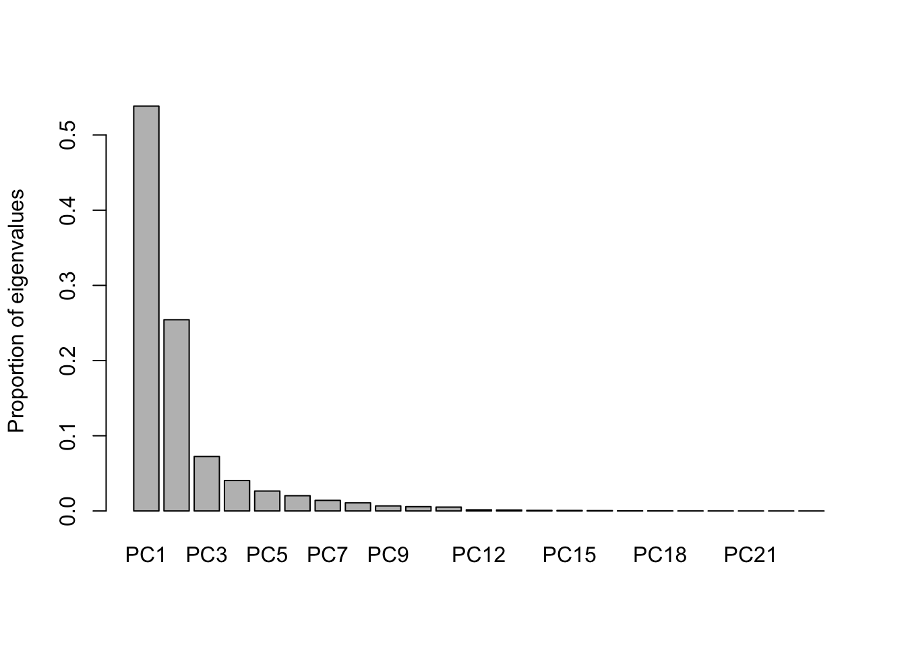
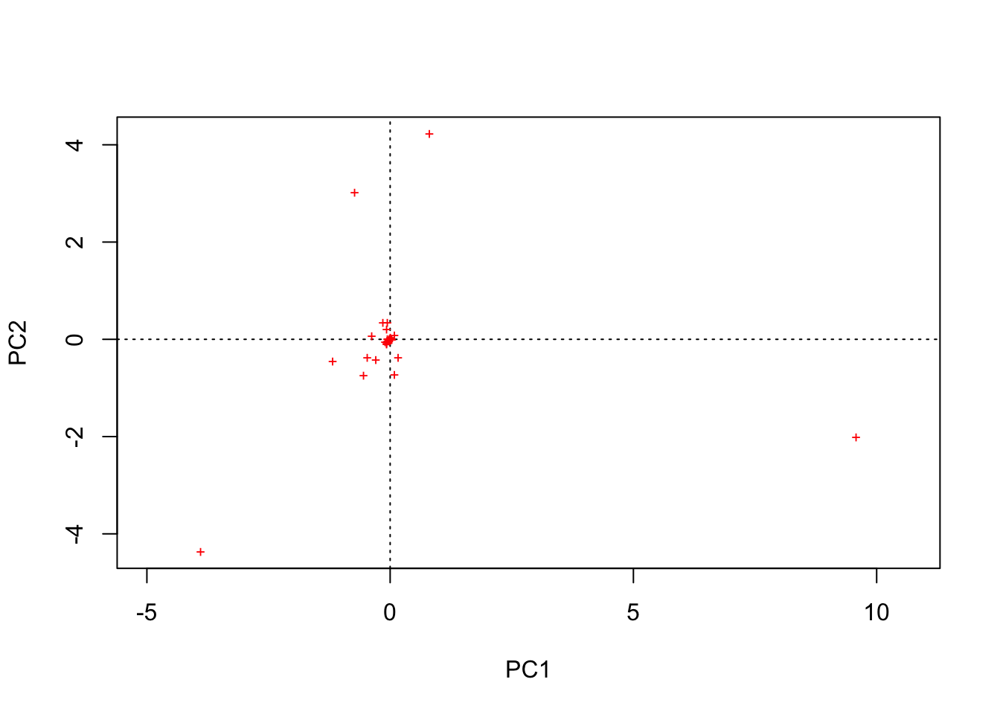
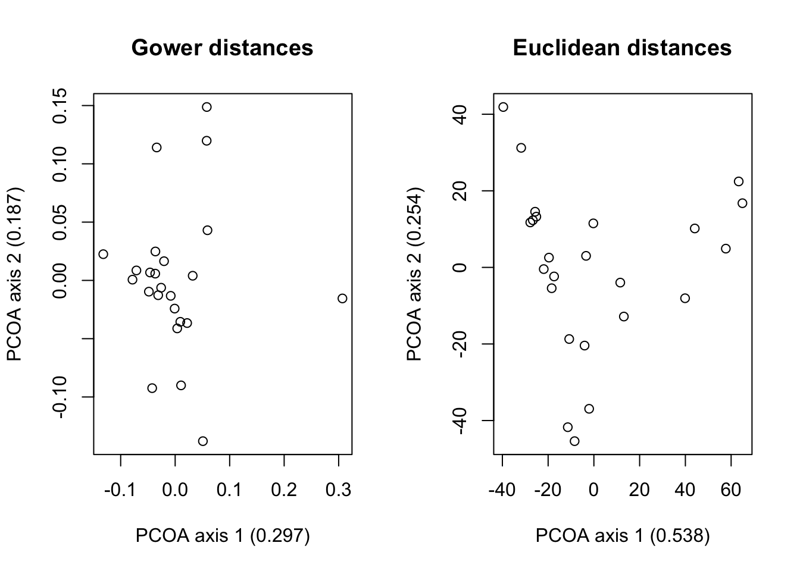
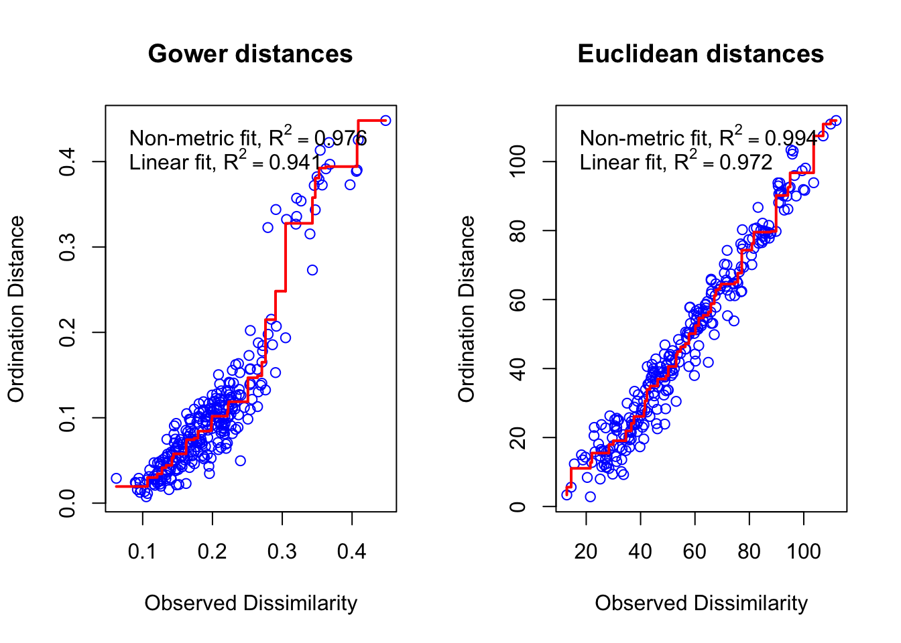
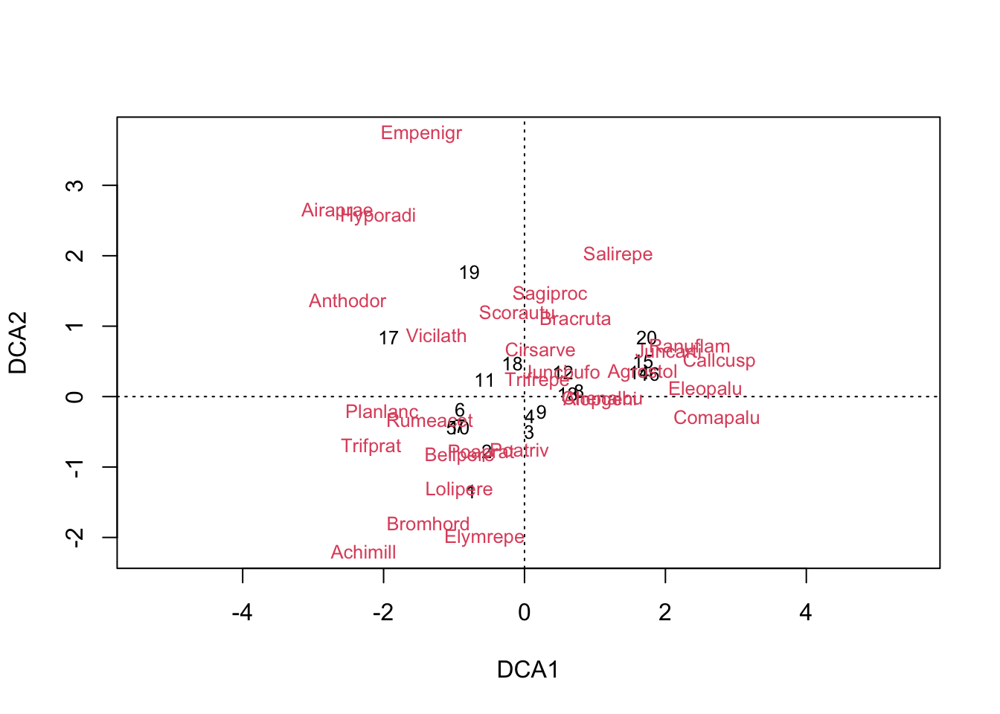
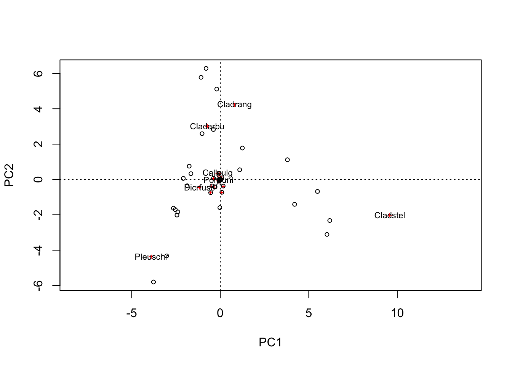
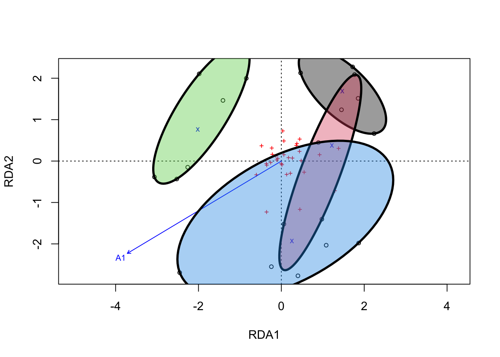

if(length(c("vegan", "ape")[!c("vegan", "ape") %in% installed.packages()[,"Package"]]) > 0){
install.packages(c("vegan", "ape")[!c("vegan", "ape") %in% installed.packages()[,"Package"]])
}Ordinating data using Vegan
Introduction
This vignette describes some of the most commonly used ordination pathways supported by this package. Unconstrained ordination examples cover principal component analysis, principal coordinate analysis, correspondence analysis, and non-metric multidimensional scaling. This vignette shows how to interpret their results by fitting environmental vectors and factors or smooth environmental surfaces to the graph. The basic plotting command, and more advanced plotting commands for congested plots are also discussed, as well as adding items such as ellipses, convex hulls, and other items for classes. The constrained ordination example employs constrained (canonical) correspondence analysis. It shows how a model is defined, and discusses model building and significance tests of the whole ordination, single constraints, and axes.
1.0 Unconstrained ordinations
The vegan package contains all common ordination methods: Principal component analysis (function rda, or prcomp in the base R), correspondence analysis (cca), and a wrapper for nonmetric multidimensional scaling (metaMDS). Additionally, it contains a function for derived dissimilarity (distance) matrixes from community abundance data in a format compatible with the ape function for principal coordinate analysis (pcoa).
In terms of its applicability to disparity analyses, Vegan is a package that supports basic analyses of categorical and traditional morphometric data. Other packages offer a much greater variety of disparity-analysis-specific support. However, as a package rooted in community ecology, the field that disparity borrows most of its methodological techniques from, it is worthwhile familiarising yourself with the capabilities of vegan.
1.1 Principal components analysis (PCA)
Let’s start simple with principal components analysis. First, check you have vegan and ape installed.
Clear your environment.
rm(list=ls())Now let’s load the example dataset. This is composed of estimated cover values of 44 different species of lichen and other flora.
library(vegan)Loading required package: permuteLoading required package: latticeThis is vegan 2.6-4data(varespec)Try viewing dataset, see if you can spot any trends.
View(varespec)Pretty difficult, right? Let’s try ordinating the data using principal component analysis.
PCA <- rda(varespec, scale = FALSE)First things first, let’s see how effectively we’ve summarised the variance in the dataset. Plot a bar chart of the proportion of the total eigenvalues accounted for by each principal component. For meaningful visualisation, you want to see the vast majority in the first 2-3 axes (so our visualisations of the data will be meaningful).
barplot(as.vector(PCA$CA$eig)/sum(PCA$CA$eig))
round(as.vector(PCA$CA$eig)/sum(PCA$CA$eig), digits = 2) [1] 0.54 0.25 0.07 0.04 0.03 0.02 0.01 0.01 0.01 0.01 0.01 0.00 0.00 0.00 0.00
[16] 0.00 0.00 0.00 0.00 0.00 0.00 0.00 0.00The first two axes account for 0.79 of the total eigenvalues, or 79% of the total variance. Its subjective, of course, but such a high proportion of the variance across the first two axes means a visualisation may be useful. Let’s plot it.
plot(PCA)The default labels are the row and column names. We can refine this. By including ‘display = “sites”’, we can just plot the rows (the sites in this dataset). Argument type let’s us specify the format of these data points.
plot(PCA, display = "sites", type = "points")
Conversely, changing the ‘display’ argument to “species” will just plot the columns (the species in this dataset).
plot(PCA, display = "species", type = "points")
If you don’t change the ‘display’ arguments, you can change formatting of both the sites and species.
plot(PCA, type = "points")
You can isolate the PCA scores with the following for further analyses.
sitePCA <- PCA$CA$u # Site scores
speciesPCA <- PCA$CA$v # Species scoresYou can also plot the results of PCA as a biplot, where the species are plotted as arrows which signify the direction in which the cover increases for those species.
suppressWarnings(biplot(PCA, choices = c(1,2), type = c("text", "points"), xlim = c(-5,10)))Don’t worry about the suppressed warnings - they’re just stating that not all arrows could be plotted because some of the species cluster at the origin (i.e. the arrows are of length zero).
You can check out your other options for customising a biplot by running the following.
?biplot.rdaThinking about ordinating your data using this function (or any of the others that follow for that matter)? Make sure it’s in the right format. You’ll want to match in the following ways:
class(varespec)[1] "data.frame"typeof(varespec)[1] "list"rownames(varespec) [1] "18" "15" "24" "27" "23" "19" "22" "16" "28" "13" "14" "20" "25" "7" "5"
[16] "6" "3" "4" "2" "9" "12" "10" "11" "21"colnames(varespec) [1] "Callvulg" "Empenigr" "Rhodtome" "Vaccmyrt" "Vaccviti" "Pinusylv"
[7] "Descflex" "Betupube" "Vacculig" "Diphcomp" "Dicrsp" "Dicrfusc"
[13] "Dicrpoly" "Hylosple" "Pleuschr" "Polypili" "Polyjuni" "Polycomm"
[19] "Pohlnuta" "Ptilcili" "Barbhatc" "Cladarbu" "Cladrang" "Cladstel"
[25] "Cladunci" "Cladcocc" "Cladcorn" "Cladgrac" "Cladfimb" "Cladcris"
[31] "Cladchlo" "Cladbotr" "Cladamau" "Cladsp" "Cetreric" "Cetrisla"
[37] "Flavniva" "Nepharct" "Stersp" "Peltapht" "Icmaeric" "Cladcerv"
[43] "Claddefo" "Cladphyl"?rdaArgument ‘x’ needs to be a data frame where the rows are samples and the columns are the variables. Bear in mind that your samples can be sites, if you’re sampling environmental variables or species coverage, or species, if you’re sampling species traits. In the case of disparity analysis, the latter will be the case. As such, make sure each row represents a taxonomic unit, and each column represents a trait.
1.2 principal coordinate analysis (PCOA)
Vegan doesn’t support principal coordinate analysis, the ordination of dissimilarity/distance matrices, but ape does. Let’s load it.
library(ape)First, we need to convert our data matrix into a distance matrix. There is a base R which offers a limited selection of distance metrics to choose from. Let’s take a look at our options.
?distOur options are “euclidean”, “maximum”, “manhattan”, “canberra”, “binary” or “minkowski”. If your dataset is 100% complete (i.e) has no missing data, you could use the default Euclidean distance. If your dataset includes any missing data, however, this function will simply drop the rows in which the missing entries occur from the analysis. vegdist offers a much greater variety of distance metrics to choose from. Let’s take a look.
?vegdistLots to choose from! It it worth familiarising yourself not just with how these distances are calculated, but also why they were derived in the first place. This will usually tell you whether they are applicable to your study.
Let’s derive a distance matrix from our data, one using the Euclidean distance, one using the Gower coefficient.
dist.E <- vegdist(varespec, method = "euclidean")
dist.G <- vegdist(varespec, method = "gower")Let’s explore the properties of one of these distance matrices.
class(dist.E)[1] "dist"typeof(dist.E)[1] "double"Just like the output of the base R dist function. Likewise, these distance matrices can be transformed into matrix objects using as.matrix. You might find these objects more intuitive to view and manipulate (I certainly do).
distM.E <- as.matrix(dist.E)
distM.G <- as.matrix(dist.G)
View(distM.E)
View(distM.G)These distance matrices can be manipulated using basic R matrix indexing. Try identifying the pairs of sites separated by the greatest and smallest distances.
Simple pre-ordination indices of disparity can be calculated from these distance matrices using base R functions. For example, from the standard ‘dist’ objects (which do not include the all-zero diagonal), the mean pairwise distance:
mean(dist.E)[1] 56.13408mean(dist.G)[1] 0.1985776However, for most standard indices of disparity we need to ordinate. We can ordinate distance matrices of either format.
PCOA.E <- pcoa(dist.E)
PCOA.G <- pcoa(dist.G)Before we do anything, we must check the relative eigenvalues.
barplot(PCOA.E$values$Relative_eig, main = "Euclidean distances")
barplot(PCOA.G$values$Relative_eig, main = "Gower distances")
Uh-oh, notice anything about the Gower distances plot? Negative eigenvalues have been introduced. This isn’t good - it means that additional variance has been added into the data to make the space defined by the axes of the ordination with positive eigenvalues.
Luckily, function pcoa has a pair of built-in correction options: the so-called Lingoes and Cailliez corrections. These corrections add constants to each non-diagonal distance in the matrix at different stages in the ordination process. The outcomes should be the same - no negative eigenvalues. Let’s try each and check.
PCOA.G.cailliez <- pcoa(dist.G, correction = "cailliez")
PCOA.G.lingoes <- pcoa(dist.G, correction = "lingoes")
barplot(PCOA.G.cailliez$values$Rel_corr_eig, main = "Gower distance relative eigenvalues - Cailliez correction")
barplot(PCOA.G.lingoes$values$Rel_corr_eig, main = "Gower distance relative eigenvalues - Lingoes correction")
Hey presto, no more negative eigenvalues. It doesn’t really matter which of these two corrections you use. However, it does matter when you apply them.
If the purpose of your study is to visualize the distribution of variation in your dataset, then corrections like this are not necessary and actually spread the variance in your dataset across more axes (compare the corrected relative eigenvalues with the uncorrected - you’ll see the first couple of axes have higher values in the latter), thereby decreasing the information content of your visualizations.
If you intend to quantify the spread of your samples across all or most axes (i.e. conduct a quantitative analysis of disparity), then it is important to ensure that the space defined by your ordination is Euclidean.
Let’s check out our PCAs. We’ll plot the first two axes of each uncorrected ordination. It is good practice when doing this to report the relative eigenvalues accounted for by each axis. I’ve done this below, rounding to three decimal places.
par(mfrow = c(1,2))
plot(PCOA.G.cailliez$vectors[,c(1,2)], main = "Gower distances",
xlab = paste0("PCOA axis 1 (", round(PCOA.G$values$Relative_eig[1], digits = 3), ")"),
ylab = paste0("PCOA axis 2 (", round(PCOA.G$values$Relative_eig[2], digits = 3), ")"))
plot(PCOA.E$vectors[,c(1,2)], main = "Euclidean distances",
xlab = paste0("PCOA axis 1 (", round(PCOA.E$values$Relative_eig[1], digits = 3), ")"),
ylab = paste0("PCOA axis 2 (", round(PCOA.E$values$Relative_eig[2], digits = 3), ")"))
par(mfrow = c(1,1))These plots look very different but the relative eigenvalues explain why: The ordination of the raw Euclidean distance matrix summarises over 75% of the variance in the dataset across the first two axes, whereas the ordination of the Gower distance matrix captures less than 50%.
This demonstrates the power of a complete data matrix. If you have one - fantastic. You can draw powerful insights into the structure of your data from simple two-dimensional visualisations. This is highly unlikely in analyses of disparity - unless your dataset is small. In these cases, you’ll need to use another distance metric, such as the Gower coefficient.
1.3 Non-metric multidimensional scaling (NMDS)
PCOA provides a Euclidean representation of a set of samples whose relative similarities to one another are quantified by some distance metric. As you have seen, sometimes 2-3 axes won’t cut it in terms of representing the bulk of the variation in the dataset. One solution to this is to plot as many axes as possible. However, this can make the results of your analyses hard to understand.
Another solution is to take a different approach to dimensionality reduction and use non-metric multidimensional scaling.
Let’s take a look at the function that does this in vegan.
?metaMDSLots of arguments here. They key ones to look at ‘k’, ‘try’, ‘trymax’, ‘autotransform’, and ‘distance’. ‘K’ specifies the number of dimensions your distance matrix will be reduced to (default = 2). ‘try’ and ‘trymax’ specify the minimum and maximum number of random placements of objects in ordination space that will be attempted during an iteration respectively. An iteration will stop before ‘trymax’ is reached if an optimal solution is reached. ‘distance’ lets you specify a distance metric from vegdist if you submit a community data object, rather than a dist object or symmetric square matrix. Finally, ‘autotransform’ dictates whether the function applies basic transformations regularly employed to community data if said data type is provided (default = TRUE).
Let’s run a series of quick analyses. We’ll use the uncorrected Gower and Euclidean distance matrices we generated earlier. First we need to figure out the best compromise between minimising the dimensionality of the resulting ordination and accurately representing the distances separating the sites.
NMDS.stress.test <- function(x, title = "NMDS stress plot") {
plot(rep(1, 10), replicate(10, metaMDS(x, k = 1, trace = F)$stress), xlim = c(1, 10),ylim = c(0, 0.30), xlab = "# of Dimensions", ylab = "Stress", main = title)
for (i in 1:10) {
points(rep(i + 1,10),replicate(10, metaMDS(x, autotransform = F, k = i + 1, trace = F)$stress))
}
}
NMDS.stress.test(dist.E, title = "NMDS stress plot - Euclidean distance")Warning in metaMDS(x, autotransform = F, k = i + 1, trace = F): stress is
(nearly) zero: you may have insufficient data
Warning in metaMDS(x, autotransform = F, k = i + 1, trace = F): stress is
(nearly) zero: you may have insufficient data
Warning in metaMDS(x, autotransform = F, k = i + 1, trace = F): stress is
(nearly) zero: you may have insufficient data
Warning in metaMDS(x, autotransform = F, k = i + 1, trace = F): stress is
(nearly) zero: you may have insufficient data
Warning in metaMDS(x, autotransform = F, k = i + 1, trace = F): stress is
(nearly) zero: you may have insufficient data
Warning in metaMDS(x, autotransform = F, k = i + 1, trace = F): stress is
(nearly) zero: you may have insufficient data
Warning in metaMDS(x, autotransform = F, k = i + 1, trace = F): stress is
(nearly) zero: you may have insufficient data
Warning in metaMDS(x, autotransform = F, k = i + 1, trace = F): stress is
(nearly) zero: you may have insufficient data
Warning in metaMDS(x, autotransform = F, k = i + 1, trace = F): stress is
(nearly) zero: you may have insufficient data
Warning in metaMDS(x, autotransform = F, k = i + 1, trace = F): stress is
(nearly) zero: you may have insufficient data
Warning in metaMDS(x, autotransform = F, k = i + 1, trace = F): stress is
(nearly) zero: you may have insufficient data
Warning in metaMDS(x, autotransform = F, k = i + 1, trace = F): stress is
(nearly) zero: you may have insufficient data
Warning in metaMDS(x, autotransform = F, k = i + 1, trace = F): stress is
(nearly) zero: you may have insufficient data
Warning in metaMDS(x, autotransform = F, k = i + 1, trace = F): stress is
(nearly) zero: you may have insufficient data
Warning in metaMDS(x, autotransform = F, k = i + 1, trace = F): stress is
(nearly) zero: you may have insufficient data
Warning in metaMDS(x, autotransform = F, k = i + 1, trace = F): stress is
(nearly) zero: you may have insufficient data
Warning in metaMDS(x, autotransform = F, k = i + 1, trace = F): stress is
(nearly) zero: you may have insufficient data
Warning in metaMDS(x, autotransform = F, k = i + 1, trace = F): stress is
(nearly) zero: you may have insufficient data
Warning in metaMDS(x, autotransform = F, k = i + 1, trace = F): stress is
(nearly) zero: you may have insufficient data
Warning in metaMDS(x, autotransform = F, k = i + 1, trace = F): stress is
(nearly) zero: you may have insufficient data
Warning in metaMDS(x, autotransform = F, k = i + 1, trace = F): stress is
(nearly) zero: you may have insufficient data
Warning in metaMDS(x, autotransform = F, k = i + 1, trace = F): stress is
(nearly) zero: you may have insufficient data
Warning in metaMDS(x, autotransform = F, k = i + 1, trace = F): stress is
(nearly) zero: you may have insufficient data
Warning in metaMDS(x, autotransform = F, k = i + 1, trace = F): stress is
(nearly) zero: you may have insufficient data
Warning in metaMDS(x, autotransform = F, k = i + 1, trace = F): stress is
(nearly) zero: you may have insufficient data
Warning in metaMDS(x, autotransform = F, k = i + 1, trace = F): stress is
(nearly) zero: you may have insufficient data
Warning in metaMDS(x, autotransform = F, k = i + 1, trace = F): stress is
(nearly) zero: you may have insufficient data
Warning in metaMDS(x, autotransform = F, k = i + 1, trace = F): stress is
(nearly) zero: you may have insufficient data
Warning in metaMDS(x, autotransform = F, k = i + 1, trace = F): stress is
(nearly) zero: you may have insufficient data
Warning in metaMDS(x, autotransform = F, k = i + 1, trace = F): stress is
(nearly) zero: you may have insufficient dataNMDS.stress.test(dist.G, title = "NMDS stress plot - Gower distance")Interpretations of these stress values is notoriously subjective. However, a widely-applied rule of thumb is that values >0.2 are a no-go. Some people will go as far as to break down how stress values below 0.2 should be intepreted (e.g. 0.1-0.2 are fine but should be treated with caution, 0.05-0.1 are good, <0.05 are excellent). However, this is very subjective and data dependent. For the purpose of this exercise, we just want to get below 0.2.
In both cases, two dimensions are sufficient, so let’s run a final set of analyses with two dimensions.
NMDS.E <- metaMDS(dist.E, k = 2, trymax = 200, trace = F)
NMDS.G <- metaMDS(dist.G, k = 2, trymax = 200, trace = F)We can draw a Shepard diagram to compare how the ordination distances fit against the original dissimilarities.
par(mfrow = c(1,2))
stressplot(NMDS.G, main = "Gower distances")
stressplot(NMDS.E, main = "Euclidean distances")
par(mfrow = c(1,1))These plots neatly demonstrate how two ordination axes produce a better fit when summarising the Euclidean distances instead of the Gower distances (we’re looking for a linear relationship). Some noise at the tails of the distribution is to be expected. Hence we can proceed with both. However, before you do, try ordinating both distance matrices with three axes and comparing the stressplots.
Once you’ve done that, plot and compare the two ordinations using the chunk below.
par(mfrow = c(1,2))
plot(NMDS.G$points, main = "Gower distances",
xlab = paste0("NMDS axis 1"),
ylab = paste0("NMDS axis 2"))
plot(NMDS.E$points, main = "Euclidean distances",
xlab = paste0("NMDS axis 1"),
ylab = paste0("NMDS axis 2"))par(mfrow = c(1,1))They don’t look too dissimilar to the PCOA plots. However, remember these are non-metric spaces. The distances between the points no longer carry consistent meaning and so the information content of these plots is limited.
1.4 Other ordination methods in Vegan
Vegan includes functions for a couple of other ordination techniques that are popular in community ecology. Most of these don’t see regular use in contemporary disparity analyses but they are worth exploring, just in case a use strikes you!
Correspondence analysis (CA)
PCA preserves Euclidean distances among samples (and so if affected by double zeros). Correspondence analysis preserves chi-square distances (and so is unaffected by double zeros). PCA assumes a linear relation between variables and ordination axes, CA a uni-modal relationship. These are the core differences between PCA and CA which will dictate which method you should use. In almost all cases, because the variation you will sample using traditional morphometrics, geometric morphometrics, and outline methods will be relatively constrained, PCA will be the most appropriate. Nevertheless let’s run through a short example using a different dataset.
data(dune)
CA <- cca(dune)Let’s plot the first two axes with the proportion of eigenvalues accounted for.
plot(CA, main = "Correspondence analysis",
xlab = paste0("CA axis 1 (", round(CA$CA$eig[1]/sum(CA$CA$eig), digits = 3), ")"),
ylab = paste0("CA axis 2 (", round(CA$CA$eig[2]/sum(CA$CA$eig), digits = 3), ")"))The first two axes account for less than half the variance in the dataset, so more than two would probably be needed for a reasonable representation.
You can extract the site and species scores with the following for further analysis.
sitesCA <- CA$CA$u
speciesCA <- CA$CA$vWhy not try analysing the varespec data using CA and comparing it to the results of the PCA?
Detrended correspondence analysis
A modified version of CA for analysing sparse ecological gradient data (e.g. time-series of species colonisation). It was developed with the intention of rectifying two alleged faults of standard correspondence analysis: the apparent curvature of straight gradients and packing of sites at the ends of the gradient. It doesn’t see much use today and will be of little relevance to most of you.
DCA <- decorana(dune)
plot(DCA)
DCA
Call:
decorana(veg = dune)
Detrended correspondence analysis with 26 segments.
Rescaling of axes with 4 iterations.
Total inertia (scaled Chi-square): 2.1153
DCA1 DCA2 DCA3 DCA4
Eigenvalues 0.5117 0.3036 0.12125 0.14267
Additive Eigenvalues 0.5117 0.2985 0.12242 0.12984
Decorana values 0.5360 0.2869 0.08136 0.04814
Axis lengths 3.7004 3.1166 1.30055 1.47888See the decorana function information for further details about the method if you’re interested. However, it will likely be of little use in analyses of disparity.
?decoranaCanonical correspondence analysis (CCA)
One of three methods of constrained ordination supported by Vegan. Constrained ordination methods analyse at least two matrices at once and seek to identify how much of the variance in one is explained by the other. While unconstrained ordination methods summarise and present all the variation in a dataset, constrained methods will only display variation in the response data that can be attributed to the predictor data.
There are constrained equivalents of each major unconstrained ordination method. For principal components analysis, there is redundancy analysis (RDA). For principal coordinates analysis and non-metric multidimensional scaling, there is distance-based redundancy analysis (db-RDA). Finally, for correspondence analysis, there is canonical correspondence analysis (CCA).
These methods are surprisingly rare in analyses of disparity. However, there potential utility is obvious. In Vegan, each constrained ordination method has its own function: CCA has cca (it switches from CA to CCA when a constraining matrix is submitted as argument ‘y’), RDA has rda (same as cca, switches from PCA to RDA if ‘y’ is a constraining matrix), non-RDA has capscale. All functions work in broadly the same way, so we’ll just run an RDA using the dune dataset.
?rdaIt is easiest to specify a constrained ordination is through a forumla. Here we are exploring to what degree variables A1 and management (from the dune.env dataset) constrain our base dataset.
When analysing abundance data, it is preferable to apply the Hellinger transformation to minimise the impact of vastly different sample total abundances. However, this is not necessary in analyses of disparity so we won’t bother here.
data("dune.env")
RDA <- rda(dune ~ A1 + Management, data = dune.env)
plot(RDA)RDACall: rda(formula = dune ~ A1 + Management, data = dune.env)
Inertia Proportion Rank
Total 84.1237 1.0000
Constrained 33.5978 0.3994 4
Unconstrained 50.5259 0.6006 15
Inertia is variance
Eigenvalues for constrained axes:
RDA1 RDA2 RDA3 RDA4
15.144 11.862 4.053 2.538
Eigenvalues for unconstrained axes:
PC1 PC2 PC3 PC4 PC5 PC6 PC7 PC8 PC9 PC10 PC11
13.230 8.426 6.798 4.978 3.709 3.044 2.523 2.159 1.799 1.244 0.855
PC12 PC13 PC14 PC15
0.665 0.476 0.374 0.245 RsquareAdj(RDA)$r.squared
[1] 0.3993855
$adj.r.squared
[1] 0.2392216We can see from the printout that these two variables, A1 + Management, explained 0.3994 of the total variance in the dune dataset. Adjusted R-squared measures the strength of the relationship between Y and X after applying a correction to the regular R-squared value to take into account the number of explanatory variables (we want the simplest model possible). This is the statistic that should be reported when model building in this way.
Testing the significance of different terms
Previously, we picked two variables at random for our RDA. What about if we want to include all variables that are statistically important? We can do this via forward selection.
First, let’s generate RDA objects that try to explain the variance in the dune dataset with all and none of the environmental variables. These will serve as our endmember models.
# all variables
RDA.upper <- rda(dune ~ ., data = dune.env)
# no variables
RDA.lower <- rda(dune ~ 1, data = dune.env)Now we will use the ordiR2step function to perform forward selection on our 5 environmental variables. This will produce an optimised model. Key arguments include: ‘object’, which specifies our start point, and argument ‘scope’, which specifies our end (so we move from no variables included to all). Argument ‘direction’ specifies how the algorithm should proceed (should it move ‘forward’, adding variables, or take them away, moving ‘backward’, or try ‘both’). Argument R2scope ensures the function will not exceed the R2 of the complete model (i.e. including all variables, defaults to TRUE).
fwd.sel <- ordiR2step(RDA.lower, RDA.upper, direction = "both")Step: R2.adj= 0
Call: dune ~ 1
R2.adjusted
<All variables> 0.32508817
+ Management 0.22512409
+ Moisture 0.20050225
+ Manure 0.16723149
+ A1 0.04626579
+ Use 0.01799755
<none> 0.00000000
Df AIC F Pr(>F)
+ Management 3 87.082 2.84 0.002 **
---
Signif. codes: 0 '***' 0.001 '**' 0.01 '*' 0.05 '.' 0.1 ' ' 1
Step: R2.adj= 0.2251241
Call: dune ~ Management
R2.adjusted
+ Moisture 0.3450334
<All variables> 0.3250882
+ Manure 0.2779515
+ A1 0.2392216
+ Use 0.2300349
<none> 0.2251241We can access the new model with the following.
fwd.sel$callrda(formula = dune ~ Management, data = dune.env)Let’s conduct another RDA using this optimised model and compare it.
RDA.opt <- eval(fwd.sel$call)
RDA.optCall: rda(formula = dune ~ Management, data = dune.env)
Inertia Proportion Rank
Total 84.1237 1.0000
Constrained 29.2307 0.3475 3
Unconstrained 54.8930 0.6525 16
Inertia is variance
Eigenvalues for constrained axes:
RDA1 RDA2 RDA3
14.865 10.690 3.675
Eigenvalues for unconstrained axes:
PC1 PC2 PC3 PC4 PC5 PC6 PC7 PC8 PC9 PC10 PC11
15.270 8.428 6.899 5.675 3.988 3.121 2.588 2.380 1.818 1.376 0.995
PC12 PC13 PC14 PC15 PC16
0.785 0.661 0.467 0.283 0.159 RsquareAdj(RDA.opt)$r.squared
[1] 0.3474729
$adj.r.squared
[1] 0.2251241Almost the same amount of variance explained by the management variable alone, with very similar adjusted R-squared values.
Why not try repeating the analyses above after switching argument R2scope to FALSE in the ordiR2step function. What changes?
There are other ways of testing for the significance of constraints. Vegan supports a series of wrapper anova functions.
The below will test the significance of the overall model we originally specified (i.e. dune ~ A1 + management).
anova(RDA)Permutation test for rda under reduced model
Permutation: free
Number of permutations: 999
Model: rda(formula = dune ~ A1 + Management, data = dune.env)
Df Variance F Pr(>F)
Model 4 33.598 2.4936 0.001 ***
Residual 15 50.526
---
Signif. codes: 0 '***' 0.001 '**' 0.01 '*' 0.05 '.' 0.1 ' ' 1You can test the significance of each term:
anova(RDA, by="term")Permutation test for rda under reduced model
Terms added sequentially (first to last)
Permutation: free
Number of permutations: 999
Model: rda(formula = dune ~ A1 + Management, data = dune.env)
Df Variance F Pr(>F)
A1 1 8.115 2.4091 0.010 **
Management 3 25.483 2.5218 0.002 **
Residual 15 50.526
---
Signif. codes: 0 '***' 0.001 '**' 0.01 '*' 0.05 '.' 0.1 ' ' 1You can test significance of the marginal effects of each term:
anova(RDA, by="mar")Permutation test for rda under reduced model
Marginal effects of terms
Permutation: free
Number of permutations: 999
Model: rda(formula = dune ~ A1 + Management, data = dune.env)
Df Variance F Pr(>F)
A1 1 4.367 1.2965 0.238
Management 3 25.483 2.5218 0.001 ***
Residual 15 50.526
---
Signif. codes: 0 '***' 0.001 '**' 0.01 '*' 0.05 '.' 0.1 ' ' 1You can test the significance of each constrained axis:
anova(RDA, by="axis")Permutation test for rda under reduced model
Forward tests for axes
Permutation: free
Number of permutations: 999
Model: rda(formula = dune ~ A1 + Management, data = dune.env)
Df Variance F Pr(>F)
RDA1 1 15.144 4.4960 0.011 *
RDA2 1 11.862 3.5215 0.015 *
RDA3 1 4.053 1.2033 0.546
RDA4 1 2.538 0.7535 0.717
Residual 15 50.526
---
Signif. codes: 0 '***' 0.001 '**' 0.01 '*' 0.05 '.' 0.1 ' ' 1Conditioned or partial ordination
All constrained ordination methods can have terms that are partialled out from the analysis before constraints are applied. This lets us reduce noise in the dataset.
RDA.part <- rda(dune ~ A1 + Management + Condition(Moisture), data=dune.env)
RDA.partCall: rda(formula = dune ~ A1 + Management + Condition(Moisture), data
= dune.env)
Inertia Proportion Rank
Total 84.1237 1.0000
Conditional 27.4865 0.3267 3
Constrained 21.3933 0.2543 4
Unconstrained 35.2439 0.4190 12
Inertia is variance
Eigenvalues for constrained axes:
RDA1 RDA2 RDA3 RDA4
11.281 4.890 3.152 2.070
Eigenvalues for unconstrained axes:
PC1 PC2 PC3 PC4 PC5 PC6 PC7 PC8 PC9 PC10 PC11 PC12
8.211 7.138 4.613 4.027 3.023 2.659 1.867 1.499 0.910 0.641 0.387 0.268 This partials out the effect of ‘moisture’, which affects the significance of the other terms. Why don’t you use the vegan ANOVA functions to explore by how much this has changed the results of the RDA?
1.5 Fitting environmental variables
Vegan provides two functions for fitting environmental variables onto ordination: envfit fits vectors of continuous variables and centroids of levels of class variables (defined as factor in R). The arrow shows the direction of the (increasing) gradient, and the length of the arrow is proportional to the correlation between the variable and the ordination; and ordisurf (which requires package mgcv) fits smooth surfaces for continuous variables onto ordination using thin plate splines with cross-validatory selection of smoothness.
Let’s try both using the base RDA of the dune dataset.
RDA.fit <- envfit(RDA ~ A1 + Management, data=dune.env)
RDA.fit
***VECTORS
RDA1 RDA2 r2 Pr(>r)
A1 -0.91473 -0.40407 0.276 0.053 .
---
Signif. codes: 0 '***' 0.001 '**' 0.01 '*' 0.05 '.' 0.1 ' ' 1
Permutation: free
Number of permutations: 999
***FACTORS:
Centroids:
RDA1 RDA2
ManagementBF 1.4749 1.6884
ManagementHF 1.2223 0.3827
ManagementNM -2.0142 0.7668
ManagementSF 0.2581 -1.9299
Goodness of fit:
r2 Pr(>r)
Management 0.6147 0.001 ***
---
Signif. codes: 0 '***' 0.001 '**' 0.01 '*' 0.05 '.' 0.1 ' ' 1
Permutation: free
Number of permutations: 999We can plot the results directly or add them to an existing ordination. The arrow shows the direction of the increasing gradient, its length proportional to the correlation between the variable and the ordination.
plot(RDA, dis = "site")
plot(RDA.fit)
Ordisurf directly adds a fitted surface to an ordination. It returns the result of the fitted thinplate spline.
ordisurf(RDA ~ A1, data = dune.env)
Family: gaussian
Link function: identity
Formula:
y ~ s(x1, x2, k = 10, bs = "tp", fx = FALSE)
Estimated degrees of freedom:
2.91 total = 3.91
REML score: 42.24929 This is a little more informative!
1.6 Plotting using Vegan
Basic plotting
Finally, vegan has a variety of functions that let you customise your ordinations.
Let’s start with a basic plot of our varespec PCA data from way, way back in this tutorial. Let’s plot the sites as points and species (variables) as crosses.
plot(PCA, type = "p")If you want finer control over your plot, it’s best to start with a blank plot first. This can be achieved by changing argument ‘type’ to “n” (i.e. you’ll just plot the axes). Let’s make the sites and species more distinct this way.
plot(PCA, type = "n")
points(PCA, display = "sites", cex = 0.8, pch=21, col="red", bg="yellow")
text(PCA, display = "species", cex=0.7, col="blue")
All vegan ordination methods have a specific plot function. In addition, vegan has an alternative plotting function ordiplot that also knows many non-vegan ordination methods, such as prcomp, cmdscale and isoMDS. All vegan plot functions return invisibly an ordiplot object, so that you can use ordiplot support functions with the results (points, text, identify). Function ordirgl (requires rgl package) provides dynamic three-dimensional graphics that can be spun around or zoomed into with your mouse. Function ordiplot3d (requires package scatterplot3d) displays simple three-dimensional scatterplots.
Ordiplot uses the same arguments as plot.cca (the vegan extension of plot). Why not try experimenting before moving on?
It is worth familiarising yourself with the arguments you can use to customise your plot. Use xlim and ylim to set the limits of your axes and the select argument (which accepts a logical vector which is TRUE for displayed items or a vector of indices of displayed items) to specify which points are plotting. You can also use the following functions to customise your plots.
You can use the ordilabel function to add partially opaque text labels to a plot: some text labels will be covered, but the uppermost will be readable.
plot(PCA, type = "points")
ordilabel(PCA, display = "species")You can use the automatic orditorp function that uses text only if this can be done without overwriting previous labels, but points in other cases. This produces a much tidier version of the labelled plot produced by ordilabel. You have to specify whether you want to label the species (columns) or sites (rows).
plot(PCA, type = "points")
orditorp(PCA, display = "species")You can use the automatic ordipointlabel function to plot both point and text labels. It tries to optimize the location of the text to avoid overwriting. However, in cluttered plots it often fails.
plot(PCA, type = "points")
ordipointlabel(PCA)Adding items to plots
Probably the most useful thing you can do to your ordination is to add some sort of convex hull to separate groups of points that are distinct from one another in some way. Vegan supports three functions for doing just that.
When adding a convex hull to a constrained ordination, you can simple specify the environmental variable you wish to group by and ordihull will add convex hulls:
plot(RDA, type = "points")
ordihull(RDA, groups = dune.env$Management, col = 1:4, lwd = 3, draw = "polygon", alpha = 100)Ordiellipse will add ellipses enclosing all points in the group (these can be altered to encompass the standard deviation or standard error of the groups using the “kind” argument):
plot(RDA, type = "points")
ordiellipse(RDA, groups = dune.env$Management, col = 1:4, lwd = 3, draw = "polygon", alpha = 100, kind = "ehull")And ordispider links items to their centroids:
plot(RDA, type = "points")
ordispider(RDA, groups = dune.env$Management, col = 1:4, lwd = 3)Unfortunately, these functions only work seamlessly with constrained ordinations. For unconstrained ordinations, we have to specify the groups.
groups <- as.data.frame(c(rep(1,8),rep(2,6),rep(3,10)))
colnames(groups) <- "grouping"
plot(PCA, type = "points")
ordihull(PCA, groups = groups$grouping, col = 1:3, lwd = 3, draw = "polygon", alpha = 100)
Have a play around with the other functions and see what you can generate!